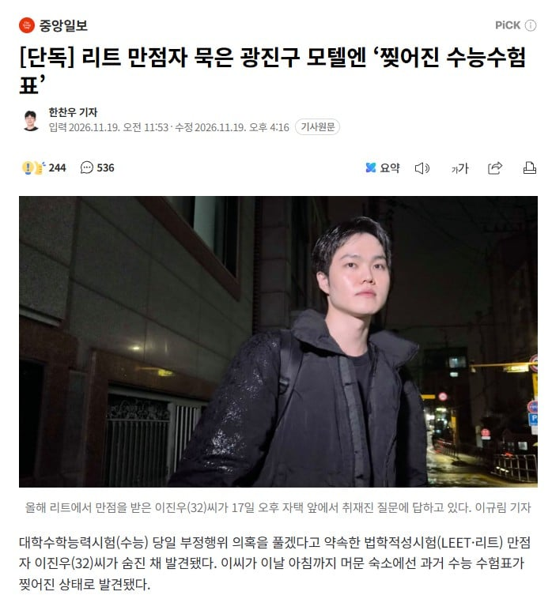
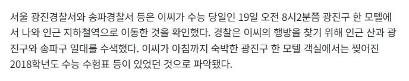

모든게 가짜였고 가족을 포함해 누구에게도 신뢰받지 못한 이진우가
늘 가슴 속에 품고 다녔던 유일한 진짜


모든게 가짜였고 가족을 포함해 누구에게도 신뢰받지 못한 이진우가
늘 가슴 속에 품고 다녔던 유일한 진짜
국어 안보는 과 지원하면 인서울은 가능할듯
국어 2등급이었으면 건대정돈 갔을듯?
국어 7등급이라...
수학 1 받고 국어 7 받는거 ㄹㅇ 어려워보이는데 그걸 해내네
다른 글 보니까 나르시스트 라던데 그 말이 맞는것 같음
본인의 사회적 위치에 미치도록 갈망 했고 그게 무너지게 되자 못참고 자살
나르시스트가 아닌 그냥 사기꾼이었으면 성공여부와 상관없이 검증장에 나왔을것 같음
따라 합시다 "나르시시스트"
71423이면 국어만 잘 봤음 인서울 했으려나 입시전문가들 알려주